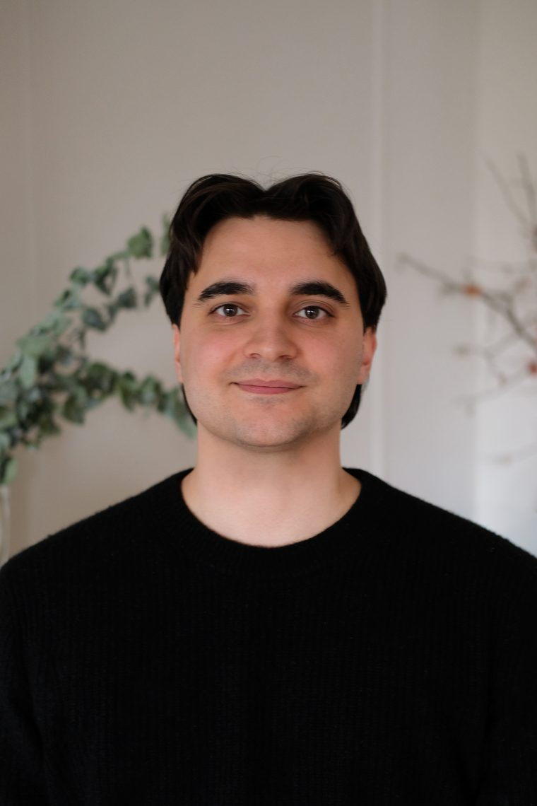

I am currently the Research Lead at the UVA Karsh Institute of Democracy's Democracy and Capitalism Lab, where we are building quantitative measurements of the relationship between democracy and capitalism.

A quantitative index measuring capitalism across eight institutions and 170 countries from 2009 to 2025.
I am the Research Lead at the UVA Karsh Institute of Democracy's Democracy and Capitalism Lab, where I built the Global Capitalism Index. I started my career at Goldman Sachs and got my BA and MPP from UVA. I care about democracy, political economy, and resilient institutions. You can reach me at jthomasroberts@gmail.com. Off the clock, I write and record music as Foreign Saints.
Download CV